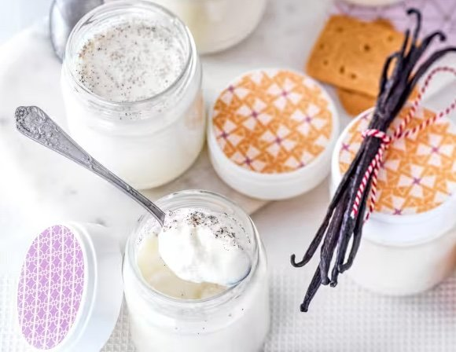

Yaourts à la vanille
Ingredients
8×
- 900 g de lait entier
- 0.5 gousse de vanille
- 125 g de yaourt nature
- 60 g de sucre en poudre
- 1 sachet de sucre vanillé
- 250 g d'eau
- 30 g de jus de citron

Préparation
Étape 1
Mettre 900 g de lait entier et 0.5 gousse de vanille fendue dans le bol. Chauffer 10 min/80ºC/vitesse 1, puis laisser refroidir jusqu’à 37ºC.
Étape 2
Retirer la gousse et l’égrainer au-dessus du bol. Ajouter 125 g de yaourt nature, 60 g de sucre en poudre et 1 sachet de sucre vanillé. Mélanger 30 sec/vitesse 4.
Étape 3
Répartir dans 8 pots de 125g, couvrir de film alimentaire et disposer dans le Varoma.
Étape 4
Mettre 250 g d'eau et 30 g de jus de citron dans le bol (le citron évite la rouille). Placer le Varoma et fermenter mode Fermentation 10h/70ºC.
Étape 5
Laisser reposer 2h minimum au réfrigérateur avant de servir.
Conseils
Se conservent 8 jours bien fermés.